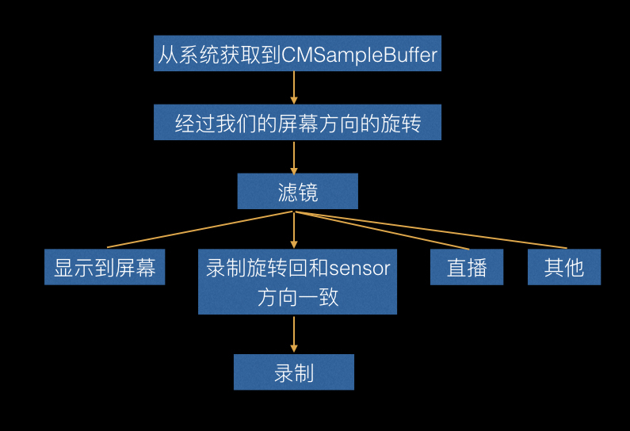

iOS相机开发的踩坑篇
相机的设置,这个demo用GPUImageview为基准，做了一个基础的demo，处理了供底层OpenGL的方向处理，其他功能参考 最后的参考链接可以实现。后面有时间的话我会去慢慢完善，大家有需要的话可以在评论下方写一下，或者加入我们的qq群:237305299。
ps:2016年整年基本上都是做avfoundation的开发，自我感觉对苹果这套库应该算是蛮了解了，网上的例子也很多，但是深入了解后发现很多其实坑很多，这篇分享主要是和大家介绍一下坑和难点，基本的用法可以看一下参考链接和下面的图。
一. 整体架构
这里有一个很大的问题，就是屏幕旋转。现在大部分视频或者直播软件我观察了一下基本上是不支持转动手机方向的。这个的选择会影响整套架构。相应难度也会降低很多。很悲催地我们一开始就要求四个方向。
录制架构，之前我使用的都是AVFoundation的AVWritter自己写的，后来发现有一个很大的问题。就是做美颜的时候，录制又会有问题。后来干脆用了GPUMovieWritter去录制。这里自带了音频录制。
GPUImageVideoCamera这个大家用的时候建议是继承一个自己写，最起码要看看源码，这个定制的化的东西太多了。并且之后设置慢动作等问题不方便。所以这个我没有用。用了AVFoundation自己的裤，然后模仿这里面的旋转等做了一下openGL的处理。
根据上诉所说，我们来整理一下流程：

二. 视频录制
1. 视频参数设置
这里是很核心的配置参数，要配合StreamEye以及相机捕捉去看自己的录制和系统录制的区别，主要是qa，清晰度等。
码率的观看可以用苹果自带的相机软件，然后用Alt+I快捷键弹出一个信息看码率。
千万不要用airdrop传文件到电脑，会导致重新编码。用苹果应用程序里面的相机捕捉工具就可以很好看的去看了。
以上几点都是无数实践的踩坑。大家一定要注意，相应参数的设置错误，会导致如果同样是4k的录制，那么你录制的达不到30fps，或者要比系统的录制大小占用空间大很多。下面我提供了一个参考设置，都是经过和系统对比还有实践出来的一些参数。如果有错误，请大家在评论下方告知我，或者加入qq群237305299,不甚感激。
1
2
3
4
5
6
7
8
9
10
11
12
13
14
15
16
17
18
19
20
21
22
23
24
25
26
27
28
29
30
31
32
33
34
35
36
37
38
39
40
41
42
43
44
| NSDictionary *videoCompressionProps;
NSDictionary *videoSettings;
switch (cameraModel.videoResolution) {
case AVCaptureSessionPreset3840x2160:
videoCompressionProps = @{
AVVideoAverageBitRateKey:@(50*1024.0*1024),
AVVideoH264EntropyModeKey:AVVideoH264EntropyModeCABAC,
AVVideoMaxKeyFrameIntervalKey:@(30),
AVVideoAllowFrameReorderingKey:@NO,
AVVideoExpectedSourceFrameRateKey:@30,
};
break;
case AVCaptureSessionPreset1920x1080:
videoCompressionProps = [NSDictionary dictionaryWithObjectsAndKeys:
[NSNumber numberWithDouble:18*1024.0*1024], AVVideoAverageBitRateKey,
AVVideoH264EntropyModeCABAC,AVVideoH264EntropyModeKey,
nil];
break;
case AVCaptureSessionPreset1280x720:
videoCompressionProps = [NSDictionary dictionaryWithObjectsAndKeys:
[NSNumber numberWithDouble:8*1024.0*1024], AVVideoAverageBitRateKey,
AVVideoH264EntropyModeCABAC,AVVideoH264EntropyModeKey,
nil ];
break;
default:
break;
}
videoSettings = [NSDictionary dictionaryWithObjectsAndKeys:
AVVideoCodecH264,AVVideoCodecKey,
videoCompressionProps, AVVideoCompressionPropertiesKey,
AVVideoScalingModeResizeAspectFill,AVVideoScalingModeKey,
[NSNumber numberWithInteger:videoSize.width],AVVideoWidthKey,
[NSNumber numberWithInteger:videoSize.height],AVVideoHeightKey,
nil];
self.writerInput = [AVAssetWriterInput assetWriterInputWithMediaType:AVMediaTypeVideo outputSettings:videoSettings];
if(cameraModel.devicePosition == DJIIPhone_DevicePositionFront){
self.writerInput.transform = [OSMOMediaUtils getAngleTransformFromScreenOritationFront];
}else{
self.writerInput.transform = [OSMOMediaUtils getAngleTransformFromScreenOritationBack];
}
self.writerInput.expectsMediaDataInRealTime = YES;
|
2. 录制方向
给AVWritter设置一个初始化的Transform,从摄像头过来的CMSampleBuffer直接进入录制流，不要去做屏幕流程。因为不这样的化会出现一个问题。
你点击录制视频，这过程中去旋转屏幕，当你支持四个方向的时候，旋转的时候就会出现闪烁。具体可以用苹果自己的相机试一下就一清二楚了。
四. GPU美颜处理后用CVPixBuffer编码直播
- GPU美颜处理
错误处理方法:
1
2
3
| CGSize outputSize = {720, 1280};
GPUImageRawDataOutput *rawDataOutput = [[GPUImageRawDataOutput alloc] initWithImageSize:CGSizeMake(outputSize.width, outputSize.height) resultsInBGRAFormat:YES];
[self.beautifyFilter addTarget:rawDataOutput];
|
将rawDataoutput作为Target加入，然后获取pixbuffer给videotoolbox处理
1
2
3
4
5
6
7
8
9
10
11
12
13
14
15
16
17
18
19
| __weak GPUImageRawDataOutput *weakOutput = rawDataOutput;
__weak typeof(self) weakSelf = self;
[rawDataOutput setNewFrameAvailableBlock:^{
__strong GPUImageRawDataOutput *strongOutput = weakOutput;
[strongOutput lockFramebufferForReading];
GLubyte *outputBytes = [strongOutput rawBytesForImage];
NSInteger bytesPerRow = [strongOutput bytesPerRowInOutput];
CVPixelBufferRef pixelBuffer = NULL;
CVPixelBufferCreateWithBytes(kCFAllocatorDefault, outputSize.width, outputSize.height, kCVPixelFormatType_32BGRA, outputBytes, bytesPerRow, nil, nil, nil, &pixelBuffer);
[weakSelf encodeWithCVPixelBufferRef:pixelBuffer];
[strongOutput unlockFramebufferAfterReading];
CFRelease(pixelBuffer);
}];
|
大家可以看一下为什么我不推荐这种方法，CVPixelBufferCreateWithBytes这里是很耗时的，要重新创建。
正确处理方法:
正确的方法建议大家看一下GPUFrameBuffer，里面有一个renderTarget，加一个类别去获取renderTarget（CVPixBuffer)，我们取出来的时候lock一下，用完unlock一下就好了。
五. 慢动作
慢动作设置,这里的技术原理实则以指定超过60fps去执行一个录制，比如240fps，然后将240fps按照30fps去写入数据填充时间段，所以就有了慢动作效果。下面的代码是设置最大速度。
1
2
3
4
5
6
7
8
9
10
11
12
13
14
15
16
17
18
19
20
21
22
| -(void)configureCameraForHighestFrameRate:(AVCaptureDevice*) device
{
AVCaptureDeviceFormat *bestFormat = nil;
AVFrameRateRange *bestFrameRateRange = nil;
for(AVCaptureDeviceFormat *format in [device formats] ) {
for ( AVFrameRateRange *range in format.videoSupportedFrameRateRanges ) {
if ( range.maxFrameRate > bestFrameRateRange.maxFrameRate ) {
bestFormat = format;
bestFrameRateRange = range;
}
}
}
if ( bestFormat ) {
if ( [device lockForConfiguration:NULL] == YES ) {
device.activeFormat = bestFormat;
device.activeVideoMinFrameDuration = bestFrameRateRange.minFrameDuration;
device.activeVideoMaxFrameDuration = bestFrameRateRange.minFrameDuration;
[device unlockForConfiguration];
}
}
}
|
六. 延时摄影
由于系统是每秒回调30次，那么现在我们自己定时器每秒取一张图，然后利用AVAssetWriterInputPixelBufferAdaptor和AVAssetWriterInput,还有AVAssetWriter去用图片组帧视频。
七. 星轨拍摄
利用GPUBlenderFilter的双输入通道即可，叠加加上。生成照片之前记得把滤镜useNextCapture.
六. 参考链接
用来拍照和录像的官方demohttps://developer.apple.com/library/prerelease/content/samplecode/AVCam/Introduction/Intro.html
苹果官方的关于拍照录像的一个综合性的demo，我也是参照这个做的https://developer.apple.com/library/prerelease/content/samplecode/AVCamManual/Introduction/Intro.html
GPU直播iOS中为直播APP集成美颜功能
录制视频，分段录制github地址
扩展GPU支持视频录制暂停和恢复.支持闪关灯开启和关闭.GPUImageExtend
使用 AVAssetWriter 录制小视频,声音的录制也在里面使用 AVAssetWriter 录制小视频,